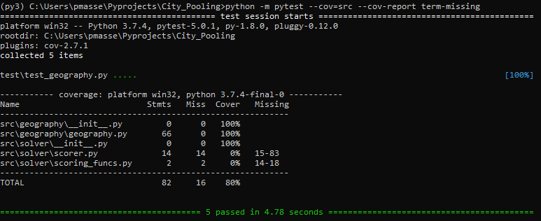

Build and Deploy¶
Introduction¶
This project does not consist in an application that is avalaible for end users, but rather the GitHub pages in which its presentation is stored:
The aim of the Deploy step is to push the new version of the documentation online.
The aim of the Build step is to check that everything is ok and produce the new version of the documentation.
The folder structure of this project is the following:
City pooling
├── index.html # Redirects towards prd/index.html (see below)
| # It is the "entry point" of GitHub pages
|
├── src # src is where source code for packages is
│ ├── geography
│ │ ├── __init__.py
│ │ └── geography.py
│ ├── solver
│ │ ├── __init__.py
│ │ └── ...
│ └── ...
│
├── test # tests are outside the src directory
│ ├── test_geography.py # run by pytest
│ └── ...
│
├── docs # all Sphinx files are in docs/, source
│ │ # files as build artefacts
│ ├── source # where source files for docs are stored
│ │ ├── index.rst # Main toctree source
│ │ ├── Build and deploy.rst# Other rst sources
│ │ ├── City Pooling.ipynb # Jupyter Notebook sources
│ │ ├── apidoc-build # Result of sphinx-apidoc build
│ │ │ ├── mods.rst # Are built before sphinx-build
│ │ │ ├── geography.rst
│ │ │ ├── solver.rst
│ │ │ └── ...
│ │ └── ...
│ └── build # result of Sphinx build (staged here for
│ ├── index.html # checking before shipping to production)
│ │ # not sent to GitHub repo (build artefacts)
│ ├── Build and deploy.html
│ ├── apidoc-build
│ │ ├── mods.html
│ │ ├── geography.html
│ │ ├── solver.html
│ │ └── ...
│ └── ...
│
└── prd # "Production" folder, which is what can be
│ # seen in GitHub pages
│ # sent to GitHub repo. Is a copy of
│ # docs/build/ after successful checking
├── index.html
├── geography.html
├── Build and deploy.html
├── apidoc-build
│ ├── mods.html
│ ├── geography.html
│ ├── solver.html
│ └── ...
└── ...
Documentation is deployed when prd/ folder is updated from docs/build/ and pushed to distant repo.
Build steps: lint, test and make documentation¶
As the project is exclusively written in Python, no build per se is necessary for the code part. However, as it is good practice, some checks are mandatory before actually build the new version of the docs.
The real Build is when the Sphinx documentation is produced from .rst files, Jupyter Notebook and .py files.
Linting: running Flake8¶
The linter used on this project is Flake8.
The command to run it a simple one. Just open a command prompt, navigate to project folder root and run:
REM Linting: running flake8
echo.
echo Running flake8. Error count:
flake8 --count
No warning or error should arise, a single 0 should be printed out.
Unit testing: running Pytest¶
Tests have to be written and run prior to any deployment to production. The package used on this project is Pytest.
There is a small hack I had to come to to make it work.
As the modules to be tested are in the src folder, the beginning of the test files looks like:
"""
Unit tests for the geography package
"""
from src.geography import geography
import numpy as np
...
Simply running pytest in the root directory would result in a ‘ModuleNotFoundError’ as src is not in the Python path.

One way to work around this problem is to simply use the following command line from the project root directory:
REM Testing: running pytest
echo.
echo Running pytest...
echo.
python -m pytest --cov=src --cov-report term-missing
The -m option adds the current to the Python path, and during test discovery pytest is then able to import sources packages.
{kind=link}
Making the docs: running Sphinx¶
Automatic documentation from python modules: sphinx-apidoc¶
The docstrings from python modules are preprocessed by the Sphinx apidoc utility, which discovers the packages of the project and then creates .rst files from their docstrings.
REM Building the docs: creating .rst files with apidoc
echo.
echo Running Sphinx apidoc...
echo.
rd /s /q .\docs\source\apidoc-build
sphinx-apidoc -o .\docs\source\apidoc-build\ .\src\ -d 1 --force^
--module-first --separate --no-headings --tocfile mods
Note
To avoid keeping outdated .rst files in the docs/source/apidoc-build folder, this folder is deleted before running the sphinx-apidoc command.
Build of html files: sphinx-build (make html)¶
Sphinx comes in with a handy make.bat file which enables to smoothly build all the documentation for the project.
It can be run by simply using the make html command, from the docs folder:
REM Building the docs: running Sphinx
echo.
echo Running Sphinx
echo.
docs\make html
It should run without showing errors, like this nice output:

After this step, a new version of the documentation is avalaible in the docs/build folder.
Note
Building the docs has no effect on the avalaible content on GitHub pages. Deploy step is required.
Caution
Built documentation should always be checked prior to being deployed.
Deploy steps: duplicate docs to prd/ and push¶
Caution
Git Working tree should be clean before deploying, as any staged change will be discarded upon deployment.
Duplicate built docs to prd/ folder¶
First step is to duplicate the whole content of docs/build/ folder to prd/ folder. This is done by simply using the robocopy tool from Windows after having deleted the prd/ folder content:
echo Replacing prd/ folder content
echo.
REM Delete prd\ folder and content
rd /s /q .\prd\
REM Copy the content of docs\build\ to a brand new prd\ folder
robocopy .\docs\build\ .\prd\ /E
Push prd/ folder to GitHub¶
Caution
To avoid unintentionnaly commiting local changes when deploying, the first step of deploying is to discard them.
REM Unstage all changes
echo.
echo Unstaging all changes
echo.
git reset
The prd/ folder has been added to the root .gitignore file of this project so as to avoid unintentionnaly deploying to production unchecked docs.
Therefore, to add the prd/ folder to the Git index, the following commands are used:
REM Force adding of prd\ folder to git index
echo.
echo Adding prd/ folder to git index
echo.
git add --force prd/
REM Commit that addition
echo.
echo Committing changes
echo.
git commit -m "Automated deployment of prd"
REM Push this commit to remote repository
echo.
echo Pushing to remote repository
echo.
git push origin master
git status
Automating these steps¶
Build and Deploy steps have been automated into 2 small .bat files, that are stored directly in the root folder of this project.
It is possible to run these steps by simply calling Build or Deploy from a command line.
Example of Build command output:

Example of Deploy command output:
{kind=link}